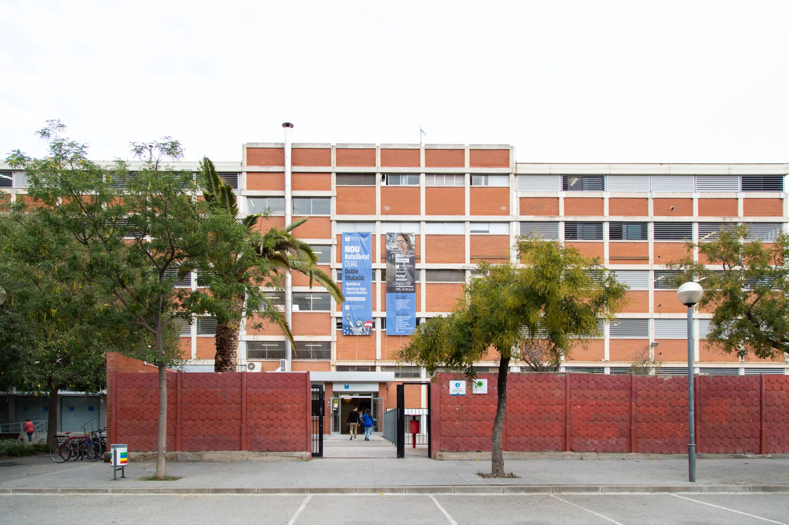

Acompañamos al alumnado a lo largo de toda su escolarización. Desplegamos un modelo educativo coherente y progresivo de los itinerarios académicos y personales. Personalizamos al máximo las orientaciones y propuestas en los estudios por el desarrollo del proyecto vital y profesional. Aplicamos un acompañamiento personalizado y un innovador modelo pedagógico que son las claves del bajo índice de abandono de los estudios postobligatorios. Disfrutamos de un entorno a la vez acogedor y exigente y de equipos docentes implicados. Así conseguimos que cada alumno pueda dar lo mejor de sí mismo.
